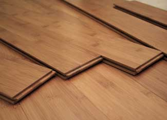
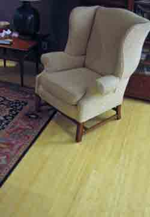

Bamboo flooring is increasingly popular as a green building material. Stalks can be harvested sustainably, and bamboo floors are as tough as they are beautiful.
Bamboo flooring is constructed in two basic ways. Solid bamboo flooring is composed entirely of layers of bamboo. Engineered bamboo flooring consists of a top layer of bamboo with a backing made of wood. There's nothing necessarily wrong with engineered flooring. In fact, it can be more appropriate for some installations. In addition, bamboo flooring comes in two configurations, which differ in how the bamboo strips are laminated together: either in flat, horizontal strips, or in thin vertical layers set on edge.
Four Good Reasons To Use Bamboo Flooring:
1. Sustainability. Bamboo can be grown sustainably in established plantations with no chemical fertilizers or pesticides. Mature stalks can be harvested without harming the plant. Properly managed and handled, bamboo is about as green as a manufactured product can be. Worldwide, there are more than 1,000 species of bamboo. Most timber bamboo is Moso bamboo from the Hunan province of China. It's rapidly renewable, reaching 4 to 6 inches in diameter in three to five years. (Traditional flooring woods of comparable hardness take 60 years to mature.)
2. Toughness. Bamboo flooring is as hard as, and in some cases harder than, traditional hardwoods such as red oak. The commonly used aluminum oxide finish is durable, too. In residential installations, many manufacturers offer lengthy warranties against construction defects and finish wear-through.
3. Easy installation. Bamboo flooring is installed just like hardwood flooring. Solid bamboo can be nailed to plywood or glued to concrete. Engineered bamboo can be nailed, glued or floated, and some brands are certified for installation over radiant-heat floors. Planks and tiles come with familiar tongue-and-groove edges. The full range of bullnoses, moldings and trim is available.
4. Beauty. Obviously a subjective judgment, but many people like the looks of bamboo. It comes in two colors, a light yellow natural color and a somewhat darker color usually called amber or caramel. This color, often also referred to as 'carbonized,' is the result of steaming the bamboo before processing it. Configuration also affects appearance. In horizontal bamboo, the 'knuckles' typical of its large stems are evident. Vertical bamboo displays hundreds of narrow strips and provides a more uniform appearance.
Five Things To Watch Out For
So what's to worry about? Of the dozens of bamboo flooring manufacturers, some sell poorly made, unsustainably harvested or irresponsibly manufactured products. There is currently no certification organization for bamboo like the Forest Stewardship Council (FSC) for lumber because bamboo is a grass rather than a tree. Still, if you check sources carefully, it's not difficult to find bamboo flooring that scores high on all counts. You'll want to resolve the issues below, and doing so depends on asking questions of your dealer. Ask to see manufacturers' statements to make sure your concerns are addressed.
1. Unsustainable production. Demand has driven some producers to use chemicals or to clear forest land to make way for bamboo. However, numerous manufacturers take pains to use bamboo from sustainable sources. If you choose engineered flooring, check that the bottom layers also are from sustainable sources. Several manufacturers use plantation-grown pine or fir, and some use wood from 'retired' plantation rubber trees. These sources have no impact on virgin forests.
2. Quality. Both solid and engineered bamboo vary in manufacturing quality. Rock-bottom prices probably mean rock-bottom quality. Ask to see a sample. Either type should feel substantial and solid, without gaps in the layers or between the laminations. If prefinished, the surface should be smooth and clear.
3. Formaldehyde content. Flooring adhesives must be tough, and some of the toughest contain formaldehyde. Over time, this dangerous material escapes into the air. However, several manufacturers offer products with extremely low concentrations. The levels of formaldehyde that outgas from these glues are lower than the levels found in normal outdoor air, and they drop over time. Sources of low-formaldehyde flooring include:
|
 ISTOCKPHOTO/LACY RANE Bamboo flooring is durable and beautiful. It's also a sustainable option. |
 CHARLES HIGGINSON Bamboo floors come in two colors, a light yellow natural color (above) and a somewhat darker color usually called amber or caramel. |
|